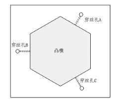

|
穿丝孔是采用其它加工方法（如机械钻孔、电火花穿孔）在工件上加工的工艺孔，穿丝孔的加工一般遵循的原则如下：
（1）穿丝孔直径大小及位置。考虑到穿丝的方便性，机加工时一般孔直径为𝜑3-10 mm，并且孔径最好选取整数值。如果切割型腔多，且排布较紧密，可以采用电火花穿孔的方式，选择较小的穿丝孔径（𝜑0.3-3.0mm），以避免各穿丝孔相互打通的问题。穿丝孔的位置最好是已知坐标点或便于计算的点。
（2）切割凹模或孔类型腔零件必须加工穿丝孔，以保证工件的完整性，对于小凹模，尤其是圆孔类零件的切割，起割点可设在型孔中心，如图1（a）所示；对于大凹模切割，起割点可设在靠近加工轨迹交点处附近，以缩短无用轨迹，并便于编程与检查。此时无用的切入行程不要太长，可以距离边缘2-5mm，以节省加工时间，如图1（b）所示。
(a)
(b)
（3）切割凸模类零件，应尽可能避免将坯料外形切断，因为这样会破坏材料内部应力平衡，使材料发生较大的变形，影响加工精度，变形严重时还会造成夹丝，使切割无法稳定进行，甚至产生断丝，如图2（a）所示。穿丝孔通常选在坯料外形附近，且切割轨迹与坯料边缘距离应大于5mm，如图2（b）所示。切割大型凸模时，尤其是厚度较大的大型凸模时，由于切割过程中，断丝几率较高，且切割面积较大，电极丝直径损耗也需要考虑，因此有条件时可沿加工轨迹设置数个穿丝孔，以便切割中发生断丝时能够就近重新穿丝，继续切割，如图3所示。
(a)
(b)
（4）切割窄槽时，穿丝孔应设在图形的最宽处，不允许穿丝孔与切割轨迹发生重合现象。
（5）穿丝孔一般应在零件淬硬之前加工好（电火花穿孔不受此限制），且加工后需清除孔中铁屑杂质。

图3 大型凸模切割时设置多个穿丝孔的情况
（6）穿丝孔的表面质量和精度不能太差，尤其对于不需要加工、直接作为基准的穿丝孔而言，表面质量和加工精度要求更高。由于这些孔的位置是作为基准用的，后续需要通过电极丝放电火花法、电阻法或自动找中心法对中心。如孔的质量较差，必然会增大基准误差。这类穿丝孔一般需要经过粗、精加工完成，实际加工中往往通过钻、扩、铰完成。
（7）在同一坯料上切割两个以上工件时，应各自设置独立的穿丝孔，以减少坯料的变形，如图4所示。
图4 多型腔加工穿丝孔设置示意图
|